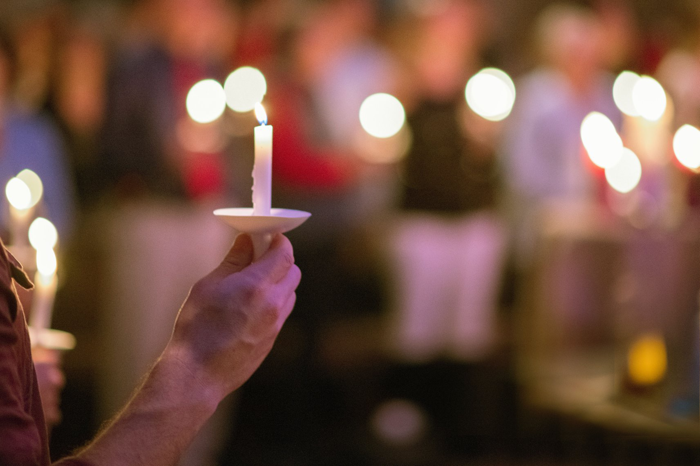
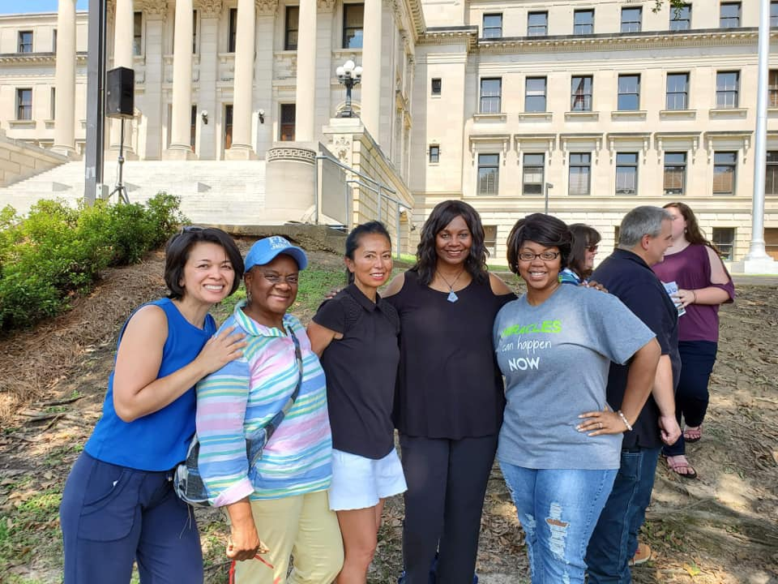
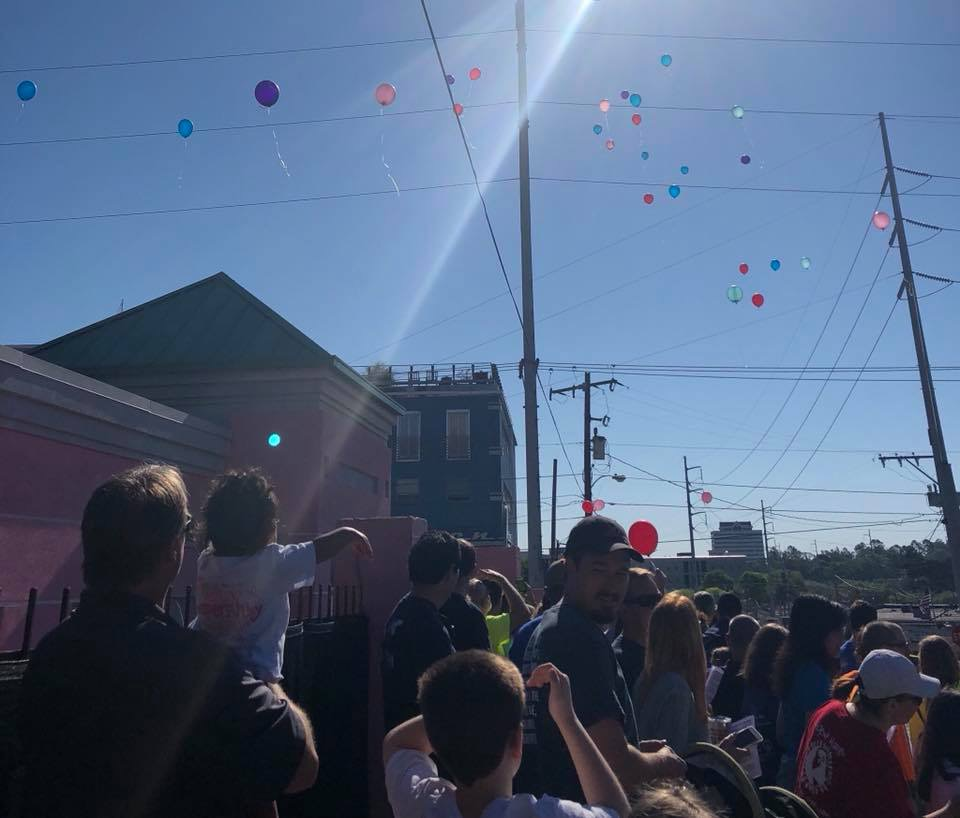
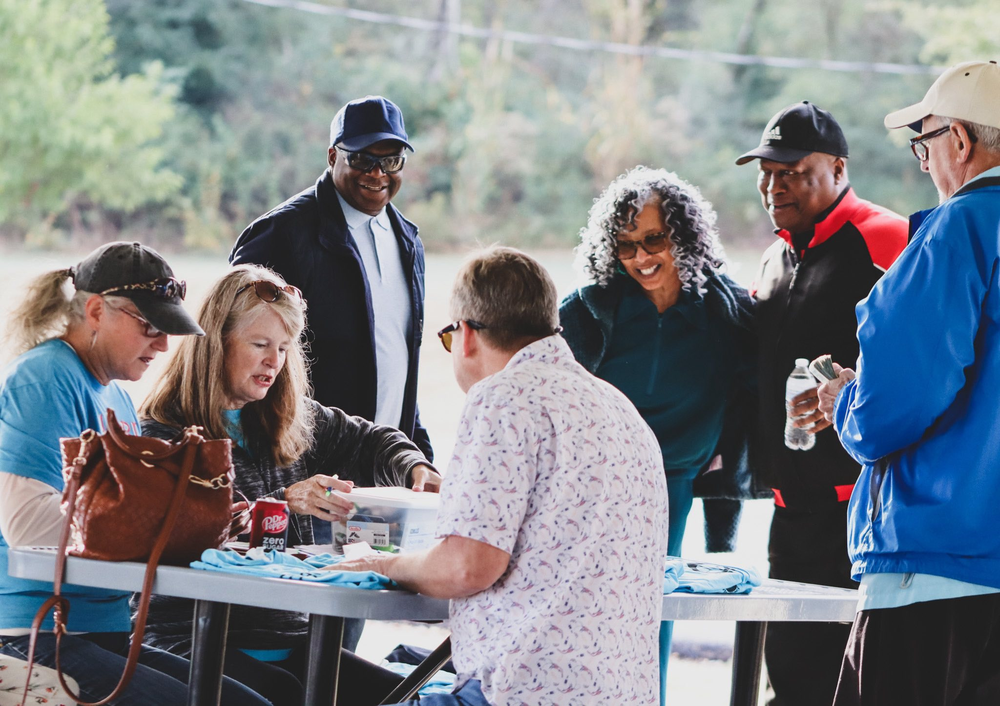
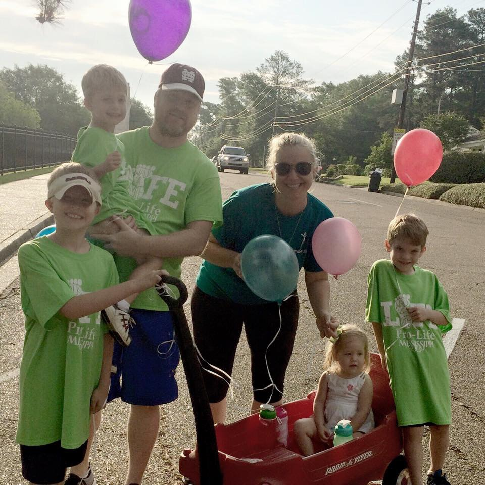

2013–2022
The Roots: a legacy of showing up.
This archival section honors the years of marches, candlelight vigils, Capitol events, balloon releases, older volunteers, and historic moments that helped build the foundation.





We honor the roots without staying stuck in the past.
These photos represent the foundation: people who prayed, walked, served, gathered, and kept showing up. The current identity builds on that history by turning presence into practical support.
“The roots matter. But the next chapter is restoration.”